← Index · ← Previous · Next →
Authors: Vito Vetrano, Vittorio Giovannetti, Vasco Cavina
Type: theory · Category: statistical mechanics · PDF: https://arxiv.org/pdf/2605.27369v1
Analysis basis: full PDF text, analyzed in chunks
Topic relevance: correlated / nonlocal dissipation 2/5 · entanglement & information structure 2/5 · methods for driven-dissipative 2/5 · non-equilibrium dynamics 2/5
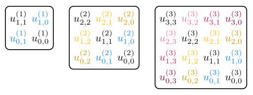
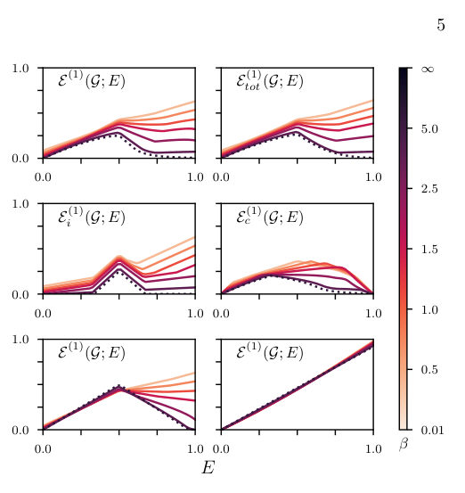
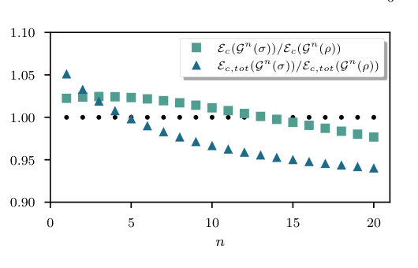
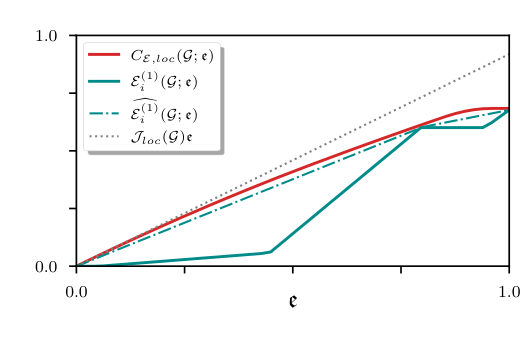
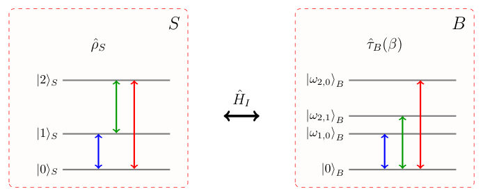
Summary. This paper introduces the Generalized Multilevel Amplitude Damping (GMAD) channel to model qudit dynamics in thermal environments. It reveals that these channels can exhibit counterintuitive thermodynamic behaviors, such as non-monotonic work extraction and a quantum-driven Mpemba effect.
Why it may be interesting. It provides new insights into how dissipative dynamics and thermal environments can be exploited for work extraction and reveals purely quantum thermodynamic effects like the coherent Mpemba effect.
Main problem. Characterizing the thermodynamic performance and energetic capacities of a new class of quantum channels (GMAD) for work extraction.
Main result. The authors demonstrate that GMAD channels exhibit non-monotonic ergotropic capacitance with respect to temperature and can drive a coherent ergotropic Mpemba effect.
Method. The study uses Kraus representation derivation, ergotropy analysis (total, coherent, and incoherent), and asymptotic analysis of work functionals (shell-maximal and ball-maximal).
Model / system. A d-level quantum system (qudit) coupled to a thermal environment at inverse temperature beta, modeled via the Generalized Multilevel Amplitude Damping (GMAD) channel.
Key observables. Ergotropy (total, coherent, and incoherent), work capacitance, and Maximal Asymptotic Work-Energy Ratio (MAWER).
Important parameters / regimes. Temperature (beta), input energy (E), coupling constants (g_ij), and the number of channel iterations.
Assumptions / limitations. The system Hamiltonian is assumed to be non-degenerate, and the interaction is energy-preserving.
Figures summary. Figure 1 shows a qualitative sketch of the GMAD channel on a 4-level system; Figure 2 displays ergotropy as a function of energy for various temperatures; Figure 3 shows local ergotropic capacitance; Figure 6 illustrates the decomposition of unitary evolution.
Paper structure. The paper introduces the GMAD channel, derives its microscopic Kraus representation, analyzes its thermodynamic properties (ergotropy and capacitance), and demonstrates specific phenomena like the Mpemba effect.
We introduce a new class of quantum channels, the Generalized Multilevel Amplitude Damping (GMAD) channels, to model noise and decoherence effects in a qudit coupled to a thermal environment. The degradation of energetic resources under GMADs is investigated by evaluating work functionals and ergotropic capacitances, with particular attention to the coherent and incoherent contributions to ergotropy, for which we introduce new quantifiers. Our analysis sheds light on how to optimally prepare a qudit in a thermal environment in order to preserve its value from the perspective of work extraction, and reveals several counterintuitive phenomena: the ergotropic capacitance of a GMAD channel is not monotonic in the temperature of the environment; moreover, iterating the map can lead to crossings between ergotropic functionals at different temperatures, indicating the presence of a Markovian Mpemba effect.
Authors: Johanna Müller, Matthias Schmidt
Type: theory · Category: statistical mechanics · PDF: https://arxiv.org/pdf/2605.26650v1
Analysis basis: full PDF text, analyzed in chunks
Topic relevance: Keldysh / 2PI / non-Gaussian methods 2/5 · non-equilibrium dynamics 2/5 · non-equilibrium universality 1/5
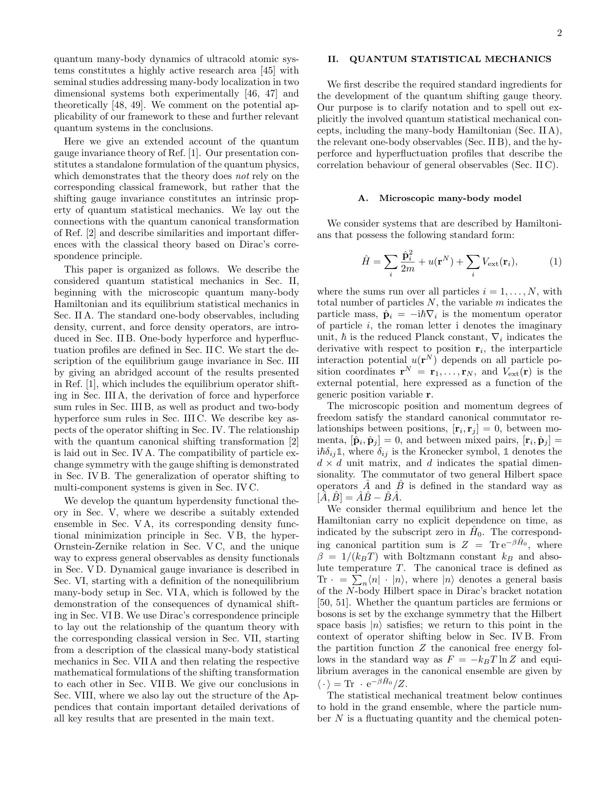
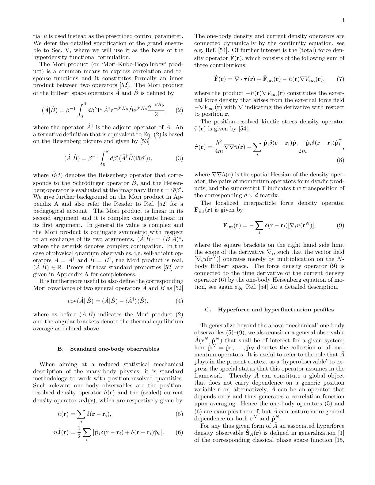
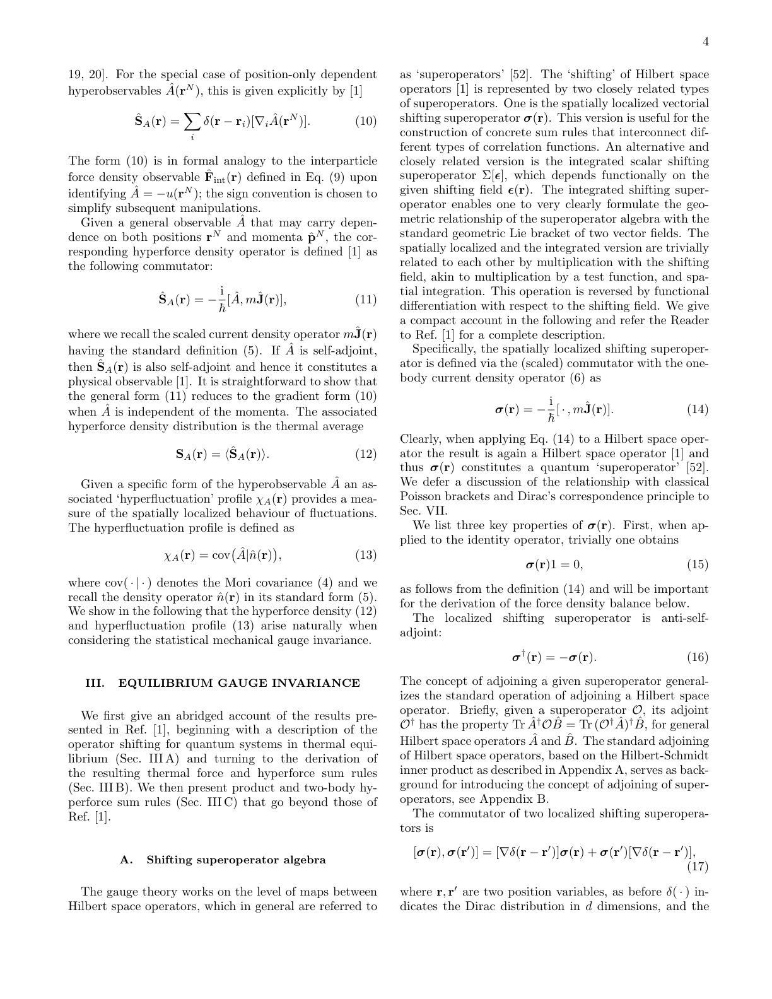
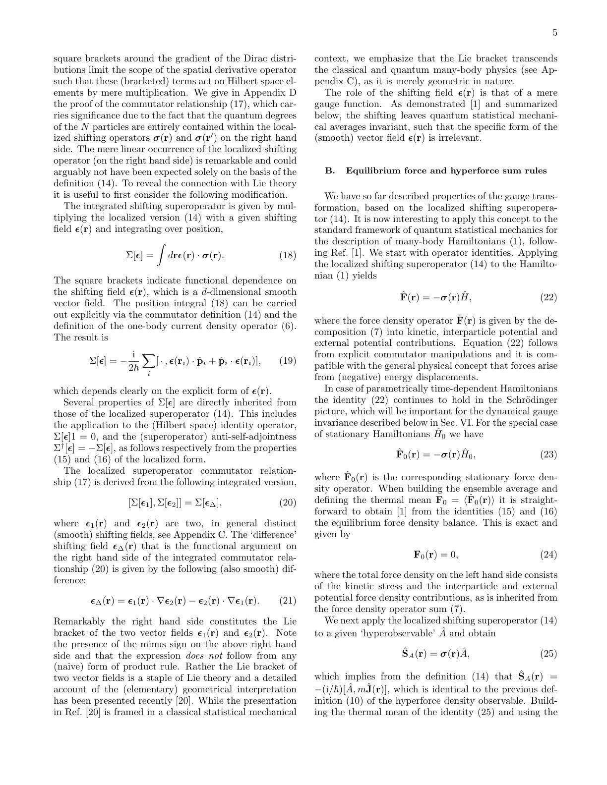
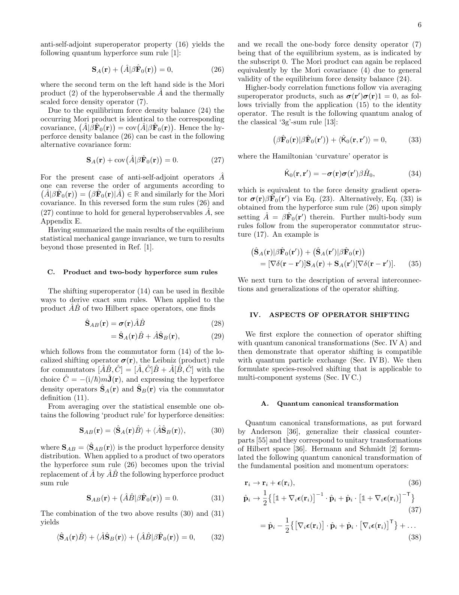
Summary. This paper establishes a formal gauge theory for quantum statistical mechanics based on the invariance of observables under operator shifting. It introduces a 'hyperdensity functional theory' and derives exact sum rules that connect local correlations to global observables. The framework is applicable to both equilibrium and time-dependent quantum many-body systems.
Why it may be interesting. It provides a rigorous mathematical foundation for deriving exact sum rules and density functionals, which are essential for understanding many-body dynamics and developing new consistency checks for numerical many-body simulations.
Main problem. Developing a generalized statistical mechanical theory of gauge invariance against operator shifting in quantum many-body systems and establishing its connection to hyperdensity functional theory.
Main result. The authors prove that a shifting superoperator induces exact sum rules (force, hyperforce, and two-body) and demonstrate that this gauge invariance is compatible with both particle exchange symmetry and canonical quantization.
Method. The framework utilizes superoperator algebra, the Mori product (inner product in Liouville space), and Lie theory to implement gauge transformations via a shifting field.
Model / system. Quantum many-body systems of N fermions or bosons in thermal equilibrium, non-equilibrium, or ground states, described by a Hamiltonian with kinetic energy, interparticle interaction, and external potentials.
Key observables. Density, current density, force density, hyperforce density, hyperfluctuation profile, and hyperobservables.
Important parameters / regimes. Temperature (T), chemical potential (mu), particle mass (m), and the shifting field (epsilon).
Assumptions / limitations. The Hamiltonian is assumed to be additive for the reduction of many-body averages; the shifting field is assumed to be smooth; the system is initially thermalized for the nonequilibrium extension.
Paper structure. The paper progresses from defining the microscopic model and equilibrium gauge invariance to describing operator shifting properties, developing hyperdensity functional theory, extending to nonequilibrium dynamics, and finally relating the quantum theory to its classical counterpart via Dirac's correspondence principle.
We provide an extended acount of the recent statistical mechanical theory of gauge invariance against operator shifting in quantum many-body systems (arXiv:2509.20494). The gauge transformation is enacted by a shifting superoperator that displaces the fundamental position and momentum degrees of freedom. The shifting superoperator constitutes a map between Hilbert space operators and it features Lie algebra commutator structure. Averages of general observables remain invariant under the shifting both in and out of thermal equilibrium, as well as in groundstates. The gauge invariance induces exact sum rules that interconnect global observables and associated locally resolved correlation functions. In particular we describe the resulting one-body force, hyperforce, product, and two-body sum rules. We relate the shifting superoperator to a previously formulated quantum canonical transformation and present the generalization of quantum shifting to multi-component systems. The gauge theory respects fundamental fermionic and bosonic particle properties, as we demonstrate by proving the compatibility of operator shifting and exchange symmetry. We formulate the quantum version of hyperdensity functional theory to provide formal access to hyperforces as well as to general averaged quantum observables via universal density functionals. For time-dependent situations, we describe quantum dynamical gauge invariance and prove exact dynamical sum rules for nonequilibrium situations, as generated by Hamiltonian time dependence. We argue for the fundamental status of statistical mechanical gauge invariance based on the compliance of the underlying geometry with canonical quantization according to Dirac's correspondence principle. Analogies and differences of the quantum mechanical sum rules with their classical counterparts remain indicative of the respective levels of description.
Authors: Masayuki Ohzeki
Type: theory · Category: numerical methods · PDF: https://arxiv.org/pdf/2605.26586v1
Analysis basis: full PDF text, analyzed in chunks
Topic relevance: entanglement & information structure 2/5 · methods for driven-dissipative 2/5
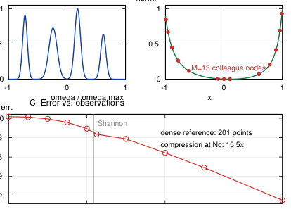
Summary. The paper presents an analytical framework for the analytic continuation of Green's functions by treating the thermal kernel through the lens of Slepian information theory. It identifies the Shannon number as the fundamental limit for information capacity and introduces a deterministic method for optimal data sampling. This allows for high-fidelity spectral reconstruction using significantly fewer data points than traditional dense grids.
Why it may be interesting. This provides a rigorous, information-theoretic foundation for compressed sensing in many-body dynamics, offering a way to reduce the computational cost of processing large Quantum Monte Carlo datasets without losing essential spectral information.
Main problem. The ill-posed inverse problem of analytic continuation, specifically reconstructing real-frequency spectra from noisy imaginary-time Green's functions in quantum many-body physics.
Main result. The paper derives an analytical singular-value decomposition for the thermal kernel and provides a deterministic, information-theoretically optimal sampling grid using a colleague-matrix construction.
Method. The author applies Slepian information theory to map the thermal kernel to a finite Fourier transform problem, utilizing Sturm-Liouville algebra and Legendre colleague matrices for optimal sampling.
Model / system. The study focuses on the Fredholm integral equation of the first kind representing the relationship between imaginary-time Green's functions and real-frequency spectra for fermionic and bosonic many-body systems.
Key observables. Real-frequency spectra A(omega), imaginary-time Green's functions G(tau), and the Shannon number Nc.
Important parameters / regimes. The Shannon number Nc = betaomega_max/pi, the bandwidth/temperature scale c = betaomega_max/2, and the compression factor.
Assumptions / limitations. The method assumes the ability to separate the universal dynamical Laplace transmission factor from the statistics-dependent thermal weight.
Figures summary. Figure 1 shows the exponential decay of singular values (the eigenvalue cliff) around the Shannon number. Figure 2 demonstrates that reconstruction error for a four-peak Gaussian spectrum drops significantly when the number of sampling nodes reaches the Shannon scale.
Paper structure. The paper identifies the analytic continuation problem, introduces the Slepian mapping to decompose the kernel, derives the analytical SVD via Sturm-Liouville theory, proposes a deterministic sampling grid via colleague matrices, and validates the method with a numerical compression test.
Analytic continuation from imaginary-time Green's functions to real-frequency spectra is a central ill-posed inverse problem in quantum many-body physics. We show that the thermal kernel admits an analytical generalized singular-value structure once its purely dynamical part is separated from the statistical weight imposed by the heat bath. The dynamical kernel is the imaginary-bandwidth continuation of Slepian's finite Fourier transform and is governed by the same Sturm-Liouville algebra that yields prolate spheroidal wave functions. Fermionic and bosonic statistics then enter as gauge transformations of the frequency-space inner product, producing self-adjoint effective potentials but no numerical kernel diagonalization. The Shannon number, $N_c=β\wmax/π$, fixes the upper information capacity of this pure Laplace channel. Finally, the optimal sampling points are obtained as eigenvalues of a Legendre colleague matrix, giving a deterministic compressed-sensing grid without iterative root searches.
Authors: Michele Minervini, Nana Liu, Mark M. Wilde
Type: theory · Category: quantum information and computing · PDF: https://arxiv.org/pdf/2605.27228v1
Analysis basis: full PDF text, analyzed in chunks
Topic relevance: analog quantum simulation 2/5 · entanglement & information structure 2/5
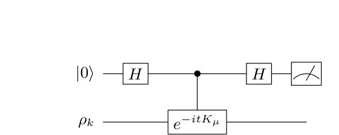
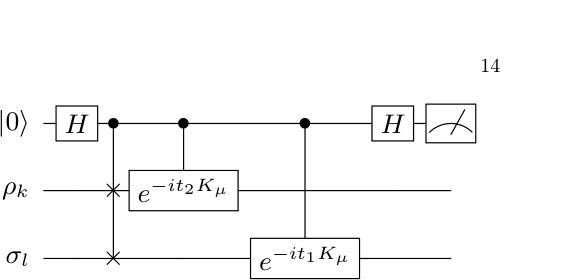
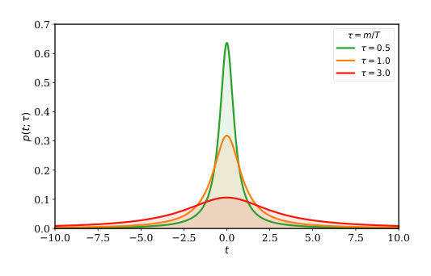
Summary. The paper introduces a framework for solving semidefinite programs by recasting them as Bose-Einstein free-energy minimization problems. By leveraging the spectral properties of the dual operator, it provides quantum algorithms that scale much more efficiently than classical methods in the presence of a spectral gap. This approach also introduces a new quantum relative entropy specifically designed for unbounded positive operators.
Why it may be interesting. It provides a novel way to map optimization problems to many-body physics, specifically using bosonic thermal states to bypass the dimension-dependent bottlenecks of classical SDP solvers.
Main problem. Efficiently solving semidefinite programs (SDPs) over the unbounded positive semidefinite cone, which is challenging for classical and existing quantum solvers due to exponential scaling and the lack of an upper bound on the primal trace.
Main result. Established a mathematical equivalence between SDPs and bosonic thermodynamic systems, providing a regularized framework that achieves an exponential advantage in error bounds when the dual slack operator has a spectral gap.
Method. A quantum-classical hybrid algorithm using Hamiltonian simulation, Hadamard tests, and Cauchy sampling to perform stochastic gradient and Newton methods on a regularized Bose-Einstein free-energy minimization problem.
Model / system. A thermodynamic system of independent, non-interacting bosonic modes where the optimization variable represents expected occupation numbers and the dual slack operator acts as a grand canonical Hamiltonian.
Key observables. Expected occupation numbers, total expected energy, thermal expectation values, and the Bose-Einstein quantum relative entropy.
Important parameters / regimes. Temperature (T), chemical potential (mu), spectral gap (Delta), ground-space degeneracy (d0), and the minimum eigenvalue of the dual slack operator (lambda_min).
Assumptions / limitations. The dual slack operator is strictly positive definite (lambda_min > 0) and the problem satisfies Slater's condition (strict feasibility).
Paper structure. The paper first establishes the equivalence between SDPs and bosonic thermodynamics, then introduces a regularized free-energy minimization approach. It develops the information geometry of a new Bose-Einstein relative entropy, derives the complexity of hybrid quantum algorithms for gradient and Hessian estimation, and concludes with error analysis and contraction properties under affine maps.
We establish that semidefinite programs (SDPs) over the unbounded positive semidefinite cone are mathematically equivalent to thermodynamic systems of independent bosonic modes: the eigenvalues of the optimization variable play the role of expected occupation numbers, the linear objective plays the role of total expected energy, and the linear equality constraints play the role of conserved non-commuting charges. Building on this perspective, we recast general SDPs as bosonic free-energy minimization problems at strictly positive temperature, regularized by the Bose-Einstein entropy; the original SDP is recovered in the zero-temperature limit. The optimal primal variable takes the form of a Bose-Einstein thermal operator parametrized by the dual variables. We prove an approximation-error bound that depends on the ground-space degeneracy and the spectral gap of the dual slack operator, improving on the linear-in-dimension worst-case duality gap of interior-point methods. We also introduce the Bose-Einstein quantum relative entropy as a Bregman divergence on the unbounded positive semidefinite cone, generated by the negative Bose-Einstein entropy. We propose it as a natural divergence for unnormalized positive operators, for which the standard Umegaki relative entropy can become negative, and we show that it satisfies a restricted monotonicity property under affine maps modeling bosonic Gaussian channels. Finally, we develop hybrid quantum-classical algorithms for the regularized SDP using only Hamiltonian simulation, Hadamard tests, and classical sampling, and bound their runtime in closed form. Unlike existing quantum SDP solvers, whose runtimes scale polynomially with an a priori upper bound on the primal trace, our framework operates directly on the unbounded cone, replacing this bound with a dependence on the spectral structure of the dual slack operator.
Authors: Sayak Bhattacharjee, Tatia Kiliptari, Dmitrii L. Maslov
Type: theory · Category: strongly correlated electrons · PDF: https://arxiv.org/pdf/2605.26207v1
Analysis basis: full PDF text, analyzed in chunks
Topic relevance: Keldysh / 2PI / non-Gaussian methods 2/5 · non-equilibrium dynamics 2/5
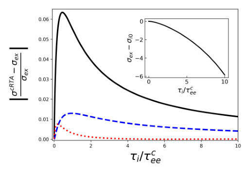
Summary. This paper introduces a new 'conserving' relaxation-time approximation that preserves particle number, energy, and momentum in kinetic equations. It provides a highly accurate and simple framework for calculating transport properties in Fermi liquids beyond the standard semiclassical limits.
Why it may be interesting. not directly relevant
Main problem. The standard relaxation-time approximation (RTA) fails to enforce fundamental conservation laws (particle number, energy, and momentum) and is often limited to the Fermi surface projection approximation, making it inaccurate for transport quantities sensitive to energy-dependent quasiparticle distributions.
Main result. The authors developed a conserving relaxation-time approximation (cRTA) that explicitly enforces conservation laws via an energy-resolved projection, achieving quantitative agreement (within 1-6%) with exact solutions for DC, longitudinal, and optical conductivity across various regimes.
Method. The cRTA uses an algebraic construction of the collision integral and an energy-resolved projection onto a hydrodynamic space of collision invariants, utilizing Wigner transforms and Moyal products to handle frequency-dependent driving terms.
Model / system. The framework is applied to single-band electron systems with arbitrary dispersion, including Galilean-invariant and non-Galilean-invariant Fermi liquids, such as 2D Dirac and 3D Weyl fermions, with both clean and disordered limits.
Key observables. DC conductivity, longitudinal conductivity, thermal conductivity, and optical conductivity.
Important parameters / regimes. Scattering times (ee and impurity), frequency (Omega), wavevector (q), temperature (T), and frequency-to-temperature ratio (Omega/T).
Assumptions / limitations. The model assumes a quasiparticle approximation, linear response to electric fields, and an energy-independent electron-electron scattering rate (neglecting logarithmic corrections in 2D).
Figures summary. Figure 1 shows the relative deviation between cRTA and exact results for different parameters and an inset displaying the temperature-dependent part of the exact solution.
Paper structure. The paper introduces the cRTA framework, details its mathematical construction and enforcement of conservation laws, benchmarks the method against exact results in various transport regimes (hydrodynamic, collisionless, viscoelastic), and discusses its application to specific systems like Weyl fermions.
We develop a conserving relaxation-time approximation (cRTA), which explicitly enforces conservation of particle number, energy, and momentum and employs an energy-resolved projection onto the full space of collision invariants. This makes the cRTA applicable to transport quantities sensitive to the energy dependence of the nonequilibrium quasiparticle distribution near the Fermi surface. We benchmark the cRTA against several exact and asymptotically exact results. In particular, it reproduces the low- and high-temperature limits of the dc conductivity of a non-Galilean-invariant Fermi liquid (FL) with disorder, the hydrodynamic and collisionless limits of the finite wavevector longitudinal conductivity of a clean Galilean-invariant FL, and the asymptotic scaling forms of the optical conductivity of a clean non-Galilean-invariant FL beyond the semiclassical limit. For several observables, the agreement with exact solutions is quantitative at the percent level. These results demonstrate that the cRTA provides a simple and accurate framework for transport beyond the Fermi surface projection approximation.
Authors: Adèle Le Borgne
Type: theory · Category: quantum gases · PDF: https://arxiv.org/pdf/2605.26336v1
Analysis basis: full PDF text, analyzed in chunks
Topic relevance: Keldysh / 2PI / non-Gaussian methods 2/5 · analog quantum simulation 2/5
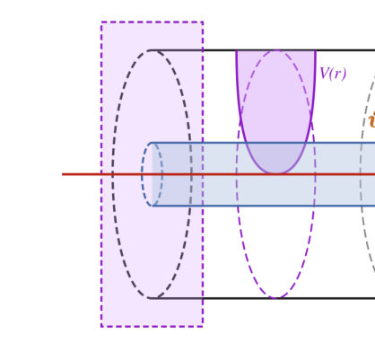
Summary. This paper extends the theoretical description of a unitary Fermi gas from spherical to cylindrical trap geometries. It demonstrates how the interplay between longitudinal and transverse confinement modifies the dynamic structure factor. These results are crucial for accurately interpreting experimental measurements of density fluctuations in trapped quantum gases.
Why it may be interesting. It provides essential corrections for interpreting Bragg spectroscopy data in ultracold atom experiments, specifically regarding how trap anisotropy breaks isotropy and modifies the phonon dispersion relation.
Main problem. The paper addresses the challenge of interpreting experimental spectra in trapped unitary Fermi gases, specifically how cylindrical trap geometries modify the dynamic structure factor and phonon dispersion relation.
Main result. The study derives how cylindrical confinement modifies the dynamic structure factor, finding that longitudinal confinement contributes a convex correction while transverse confinement contributes a concave correction, with the net effect being convex for typical experimental parameters.
Method. The authors use an Effective Field Theory (EFT) framework based on superfluid hydrodynamics, employing a Wentzel-Kramers-Brillouin (WKB) expansion and a hierarchy of scales approach to analyze different energy regimes.
Model / system. A unitary Fermi gas (a strongly coupled, nonrelativistic Conformal Field Theory) realized using ultracold 6Li atoms, confined in a cylindrical geometry with power-law radial potentials and axial light sheets.
Key observables. Dynamic structure factor S(q, omega), phonon dispersion relation, and the energy spectrum.
Important parameters / regimes. Bertsch parameter (xi), speed of sound (cs), dispersion parameter (gamma), aspect ratio (epsilon), and low-energy constants (c0, c1, c2).
Assumptions / limitations. The system is treated in the zero-temperature limit, the radial potential is assumed to approximate a hard-wall box, and the Bragg pulse is assumed to be in the linear response regime.
Figures summary. Figure 1 illustrates the condensate in cylindrical geometry; Figure 2 shows the energy spectrum and the accuracy of the WKB fit using numerical diagonalization.
Paper structure. The paper introduces the problem of trap-induced distortions, extends a spherical EFT framework to cylindrical geometry, identifies three physical energy regimes, derives the modified dynamic structure factor, and compares analytical WKB results with numerical diagonalization.
The unitary Fermi gas serves as a tunable realization of a strongly coupled CFT, making it a powerful system for probing universal quantum many-body phenomena. Precise measurement of its properties remains experimentally challenging: finite-temperature effects and spatial inhomogeneity introduced by external trapping potentials can significantly distort observables. Cylindrical trap geometries are commonly used in experiments. This note extends an existing theoretical framework to this geometry, deriving how the cylindrical confinement modifies the dynamic structure factor at zero temperature. These results provide a necessary correction for the interpretation of experimental spectra in trapped unitary gases.
Authors: Shadan Ghassemi Tabrizi, Thomas D. Kühne
Type: theory · Category: numerical methods · PDF: https://arxiv.org/pdf/2605.26261v1
Analysis basis: full PDF text, analyzed in chunks
Topic relevance: analog quantum simulation 2/5 · exotic spin models in light-matter 2/5
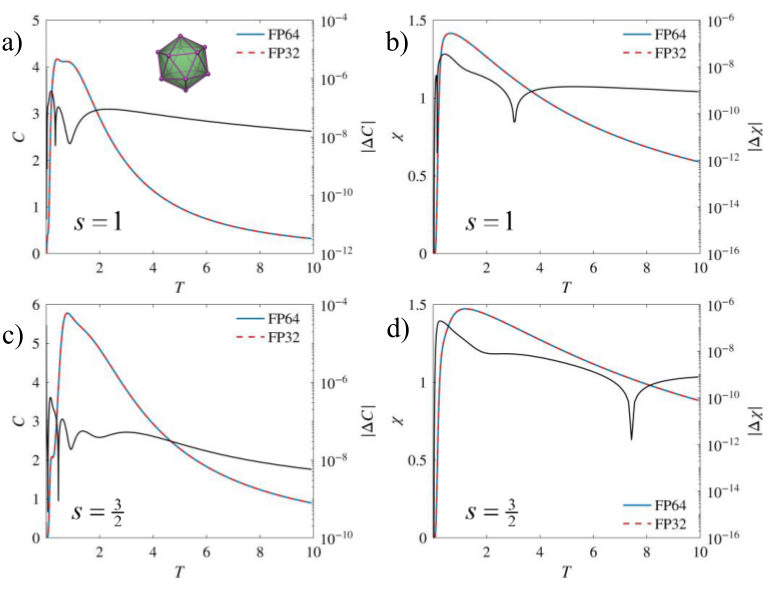
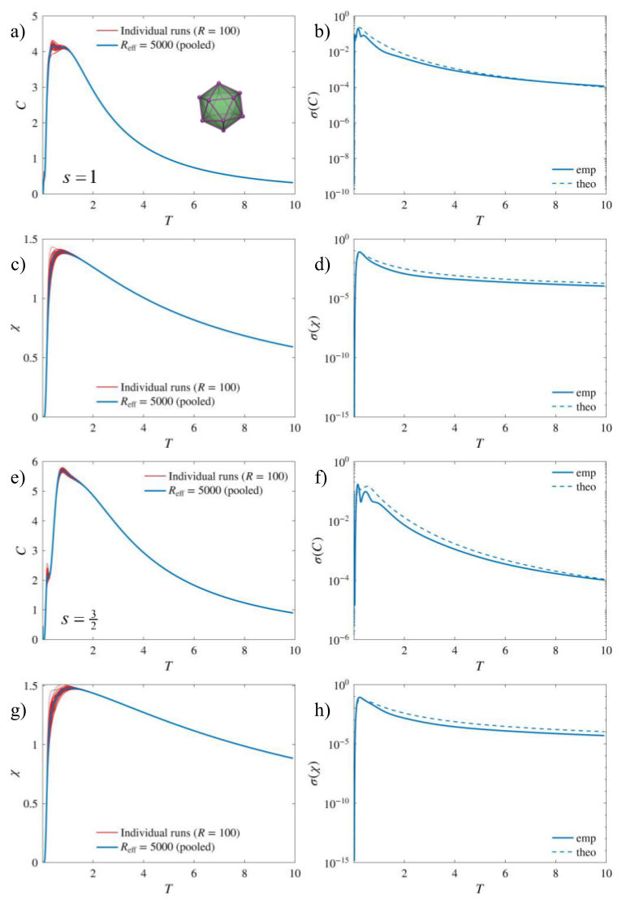
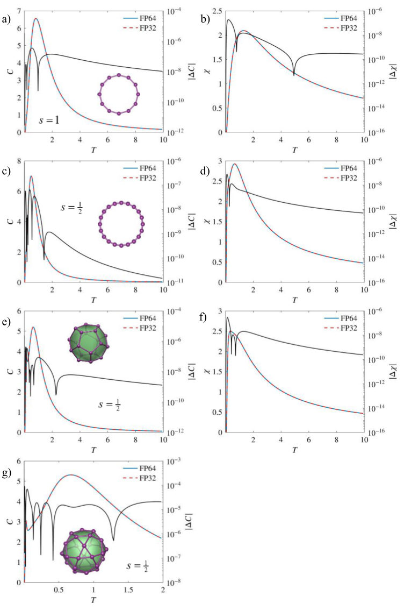
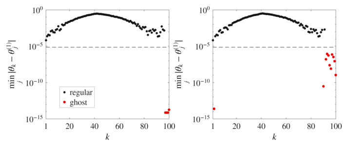
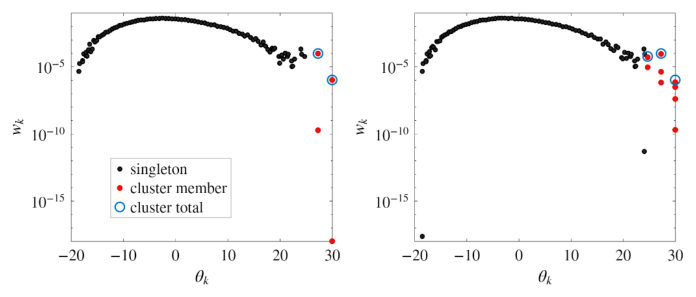
Summary. This paper presents a GPU-accelerated version of the Finite-Temperature Lanczos Method designed for workstation hardware. By using a matrix-free approach and optimized indexing, it allows for much larger spin cluster simulations than traditional methods. The study demonstrates that single-precision GPU arithmetic is sufficient for calculating thermodynamic observables accurately.
Why it may be interesting. This provides a highly efficient, accessible tool for simulating the thermodynamic properties of large-scale quantum many-body systems using standard workstation hardware.
Main problem. The exponential growth of memory requirements for storing the Hamiltonian in sparse format prevents large-scale finite-temperature calculations on workstation-grade GPUs.
Main result. The authors developed a matrix-free GPU implementation of the Finite-Temperature Lanczos Method (FTLM) that achieves 10x speedups over CPUs and enables Hilbert space dimensions of ~10^8 using single-precision arithmetic without sacrificing physical accuracy.
Method. A matrix-free, row-wise gather formulation using two state-to-index strategies: a Compressed Lookup Table (CLT) and a Combinatorial-Ranking (CR) scheme, implemented in MATLAB/CUDA.
Model / system. Heisenberg spin Hamiltonians for exchange-coupled spin clusters and magnetic solids, specifically applied to icosahedron and icosidodecahedron geometries with varying spin magnitudes (s = 1/2 to 2).
Key observables. Partition function (Z), magnetic susceptibility (chi), heat capacity (C), and magnetization.
Important parameters / regimes. Hilbert space dimension ~10^8, spin magnitude (s), total magnetization sector (M), and single-precision (FP32) vs. double-precision (FP64) arithmetic.
Assumptions / limitations. The implementation is optimized for workstation GPUs rather than distributed clusters and currently relies on S_z symmetry.
Figures summary. Figure 4 and 5 show the distribution of Ritz eigenvalues and the impact of ghost eigenvalues in FP32 vs FP64; Table 3 compares wall-clock time scaling between CPU and GPU kernels.
Paper structure. The paper introduces the computational bottleneck of Hamiltonian storage, presents the matrix-free GPU implementation and its indexing strategies (CLT and CR), evaluates numerical precision and error scales, and concludes with performance benchmarks and scaling studies.
We present a GPU implementation of the finite-temperature Lanczos method (FTLM) for Heisenberg spin Hamiltonians that targets workstation hardware rather than distributed-memory clusters. The Hamiltonian action is evaluated matrix-free in a row-wise gather formulation. We introduce and compare two state-to-index strategies: a compressed lookup table (CLT), which reduces lookup memory by a factor of 16 relative to a full table while retaining a fixed, branch-light access pattern, and a GPU-adapted combinatorial-ranking scheme that removes the lookup table altogether. Numerical tests against FP64 CPU references show that FP32 GPU arithmetic changes heat capacities and magnetic susceptibilities by amounts several orders of magnitude below the stochastic uncertainty of the FTLM trace estimator at typical sample sizes. Benchmarks show speedups of up to about one order of magnitude over optimized multicore CPU calculations and enable Hilbert-space sectors of dimension ~10^8 on a single workstation GPU. The MATLAB/CUDA implementation, including example input files and benchmark scripts, is openly available at https://github.com/ghasdeke/ftlm-gpu (archived at DOI: 10.5281/zenodo.20378647) under the Apache-2.0 license.
Authors: Thilo Scharnhorst, Jack Spilecki, John Wright
Type: theory · Category: quantum information and computing · PDF: https://arxiv.org/pdf/2605.27262v1
Analysis basis: full PDF text, analyzed in chunks
Topic relevance: entanglement & information structure 2/5 · quantum measurements 2/5
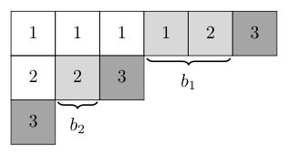
Summary. This paper provides new, nonasymptotic bounds for quantum purity amplification that hold for finite numbers of noisy quantum state copies. Unlike previous works that only describe the infinite-sample limit, this result shows how the required number of samples scales with the desired fidelity and the spectral gap of the input state. The derivation uses advanced combinatorial tools like random Young diagrams and the RSK correspondence.
Why it may be interesting. This is highly relevant for quantum information processing and open quantum systems, as it provides rigorous, finite-sample guarantees for state purification protocols which are essential for practical quantum error mitigation and state preparation.
Main problem. The paper addresses the problem of quantum purity amplification (QPA), specifically seeking to establish nonasymptotic bounds on the number of noisy state copies required to prepare a high-fidelity target pure state.
Main result. The authors establish a nonasymptotic guarantee that n copies suffice to achieve fidelity 1-delta if n scales with k, delta, and the spectral gap between the two largest eigenvalues, independent of the dimension d.
Method. The proof utilizes the combinatorics of random Young diagrams, the Robinson-Schensted-Knuth (RSK) correspondence, and the representation theory of the symmetric and unitary groups (Schur-Weyl duality).
Model / system. The model involves n copies of a d-dimensional noisy density matrix rho, where the task is to transform these copies into k copies of the principal eigenstate.
Key observables. Output fidelity relative to the target state, sample complexity (n), and the spectral gap (p_d - p_{d-1}).
Important parameters / regimes. Number of input copies (n), number of output copies (k), error parameter (delta), and the eigenvalues of the input state (p_i).
Assumptions / limitations. The principal eigenstate is assumed to be unique (p_{d-1} < p_d), and the bounds are derived for arbitrary spectra.
Figures summary. Figure 2 illustrates the concept of 'overhang' in a Young diagram by showing how removing boxes labeled d affects the diagram structure.
Paper structure. The paper introduces the QPA problem and the gap in existing asymptotic literature, defines the QPA channel using representation theory, develops a combinatorial fidelity formula using RSK correspondence, and concludes with the derivation of the nonasymptotic complexity bound.
In quantum purity amplification, one is given $n$ copies of a noisy quantum state $ρ\in \mathbb{C}^{d \times d}$ and asked to prepare $k$ copies of its principal eigenstate $|v_d\rangle$. Several prior works have derived information-theoretically optimal algorithms for this problem, but the bounds they prove are only shown in the asymptotic regime as the number of samples $n$ tends to infinity. In this paper, we establish the following nonasymptotic guarantee: if $ρ$'s eigenvalues are sorted $p_1 \leq \cdots \leq p_d$ and $p_{d-1} < p_d$, then \begin{equation} n = O\Big(k + \frac{k}δ \cdot \frac{1-p_d}{(p_d-p_{d-1})^2}\Big) \end{equation} copies suffice to output a state with fidelity at least $1-δ$ with $|v_d^{\otimes k}\rangle$. Our bound holds for arbitrary spectra, and is independent of the dimension $d$. In the case of depolarizing noise, our finite-sample guarantee matches the optimal asymptotic scaling. Our proof is based on the combinatorics of random Young diagrams.
Authors: Yuuya Yoshida
Type: theory · Category: quantum information and computing · PDF: https://arxiv.org/pdf/2605.27278v1
Analysis basis: full PDF text, analyzed in chunks
Topic relevance: entanglement & information structure 2/5 · quantum measurements 2/5
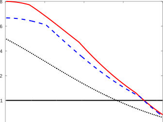
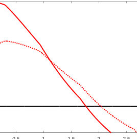
Summary. This paper identifies a fundamental quantum advantage in the high-privacy regime of local differential privacy. It proves that for datasets with three or more items, quantum mechanisms provide a strictly higher utility-to-privacy ratio than classical mechanisms, regardless of the specific information-theoretic metric used.
Why it may be interesting. not directly relevant
Main problem. Optimizing the trade-off between privacy and utility in the high-privacy regime (epsilon -> 0) for Quantum Local Differential Privacy (QLDP) compared to classical LDP.
Main result. The paper proves that in the high-privacy regime, the ratio of quantum to classical optimal utility (Q/C) is constant regardless of the utility function and demonstrates a quantum advantage of at least 3/2 for data with cardinality n >= 3.
Method. The author uses second-order Taylor expansions, Fréchet derivatives, and Petz monotone metrics to analyze utility functions, alongside frame theory (isoclinic mechanisms) to construct optimal quantum mechanisms.
Model / system. The framework involves a data collector estimating information from private data provided via quantum states (QLDP) or classical probability distributions (LDP), using density matrices on a d-dimensional Hilbert space.
Key observables. Holevo information, mutual information, error exponents in symmetric and asymmetric hypothesis testing, and f-divergences.
Important parameters / regimes. Privacy parameter epsilon (specifically the limit epsilon -> 0), data cardinality n, and the dimension d of the Hilbert space.
Assumptions / limitations. The utility functions are assumed to be symmetric, unitary invariant, and possess a positive second derivative (Hessian) at the uniform distribution; the quantum advantage disappears for binary data (n=2).
Figures summary. Figure 1 plots the ratios of symmetric and asymmetric error exponents against epsilon for different n, illustrating the presence of quantum advantage for small epsilon.
Paper structure. The paper introduces the privacy-utility trade-off, establishes the mathematical framework for LDP and QLDP, proves the fundamental asymptotic ratio theorem, constructs optimal isoclinic mechanisms, and analyzes specific hypothesis testing scenarios.
We optimize the trade-off between privacy and utility in the high-privacy regime. We adopt local differential privacy (LDP) and its quantum extension, quantum local differential privacy (QLDP), for privacy protection, and investigate utility functions including the Holevo information (which reduces to the mutual information in the classical case) and the error exponents in symmetric and asymmetric hypothesis testing. These utility functions have classical and quantum optimal values, which are denoted by $C$ and $Q$, respectively, in this abstract for simplicity. In this paper, we provide optimal LDP and QLDP mechanisms achieving the classical and quantum optimal values in the high-privacy regime, and prove that the asymptotic ratio $Q/C$ in this regime takes the same value regardless of the utility function. Our results reveal quantum advantages (more precisely, $Q/C\ge3/2$) for the above utility functions when the protected private data are $n$-ary with $n\ge3$.
Authors: Kensuke Gallock-Yoshimura, Yoshihiko Hasegawa
Type: theory · Category: other · PDF: https://arxiv.org/pdf/2605.26214v1
Analysis basis: full PDF text, analyzed in chunks
Topic relevance: Keldysh / 2PI / non-Gaussian methods 2/5 · entanglement & information structure 2/5
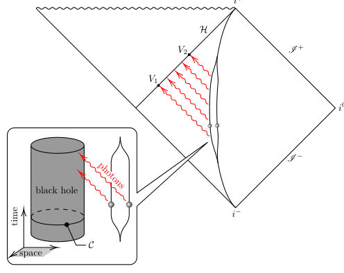
Summary. This paper establishes a fundamental limit on the precision with which a black hole can record quantum information, showing that entropy fluctuations are unavoidable. It proves that the relative variance of the entropy change is inversely proportional to the number of infalling photons. This result links the stochastic nature of semiclassical gravity to the information-carrying capacity of quantum fields.
Why it may be interesting. not directly relevant
Main problem. The paper investigates whether black hole horizons can record quantum information with arbitrarily small entropy fluctuations and seeks to establish a fundamental trade-off relation between entropy variance and the amount of infalling quantum information.
Main result. The authors derive a fundamental trade-off relation where the relative variance of the black hole entropy change is bounded from below by the inverse of the photon number: Var[Delta delta S] / (E[Delta delta S])^2 >= 1 / (4
Method. The study utilizes stochastic semiclassical gravity and the Einstein-Langevin equations, employing the Magnus expansion, the Cauchy-Schwarz inequality, and the gravitational phase space method to analyze fluctuations in the energy-momentum tensor.
Model / system. The system consists of an asymptotically flat, stationary Schwarzschild black hole interacting with infalling quantum matter fields (photons) within the framework of the Danielson-Satishchandran-Wald decoherence mechanism.
Key observables. Stochastic variance of black hole entropy change (Var[Delta delta S]), expectation value of entropy change (E[Delta delta S]), photon number (
Important parameters / regimes. Planck length (l_P), Schwarzschild radius (r_h), effective dipole moment (ql), and the number of entangling photons.
Assumptions / limitations. The field state is assumed to be a quasifree Hadamard state, and the spacetime is assumed to be stationary and asymptotically flat.
Figures summary. Figure 1 provides a Penrose diagram of a black hole and a schematic of the DSW experiment, illustrating a superposed charge and the capture of entangling photons by the horizon.
Paper structure. The paper begins by defining the physical problem and the DSW decoherence mechanism, proceeds to establish the mathematical framework of stochastic semiclassical gravity, derives the fundamental trade-off relations and uncertainty bounds using field-theoretic methods, and concludes with implications for horizon area fluctuations.
Black holes respond to infalling quantum matter fields by changing their entropy. Since such matter is quantum in nature, the entropy response should be sensitive to its quantum fluctuations. We show, within stochastic semiclassical gravity, that a horizon cannot record relevant quantum information with arbitrarily small entropy fluctuations. For the infalling photons encoding which-path information in the Danielson-Satishchandran-Wald decoherence experiment, we derive a trade-off relation between the stochastic variance of the black hole entropy change and the photon number.
Authors: Haruki Yamashita, Aina Mayumi, Gen Kimura
Type: theory · Category: quantum information and computing · PDF: https://arxiv.org/pdf/2605.26331v1
Analysis basis: full PDF text, analyzed in chunks
Topic relevance: entanglement & information structure 2/5 · quantum measurements 2/5
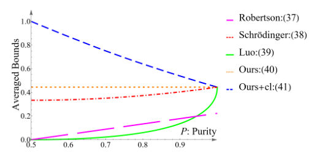
Summary. The paper establishes that the uncertainty of a single quantum observable has an intrinsic lower bound determined by its noncommutativity with the quantum state. It introduces a method to decompose variance into classical and quantum components, achieving an exact identity for qubit systems. These new relations are shown to be tighter than traditional uncertainty bounds like the Robertson or Schrodinger relations.
Why it may be interesting. This is highly relevant for quantum information and open quantum systems as it provides a fundamental way to quantify the 'quantumness' or coherence of an observable relative to a state, which is crucial for understanding decoherence and resource theories.
Main problem. Investigating whether the uncertainty of a single observable admits a non-trivial lower bound based on the noncommutativity between the observable and the quantum state.
Main result. The authors derive optimal, state-dependent lower bounds for the variance of a single observable and show that for qubits, these bounds provide an exact decomposition of variance into classical and noncommutative parts.
Method. The study uses spectral decomposition, the Hilbert-Schmidt norm, and the pinching map to decompose variance, alongside optimization of coefficients for a family of uncertainty relations.
Model / system. The work considers general finite-dimensional quantum systems (Hilbert space C^d) and provides detailed analysis for qubit systems using the Bloch vector representation.
Key observables. Variance of a single observable (V_rho(A)), Wigner-Yanase-type quantity, and commutator norms.
Important parameters / regimes. Eigenvalues of the density operator (lambda_max, lambda_min), purity (P), and the parameter s in the family of relations s in [1/2, infinity).
Assumptions / limitations. The results exclude the maximally mixed state where the commutator vanishes, and the specific identity results are derived for qubit systems.
Figures summary. Figure 1 compares the averaged lower bounds of various uncertainty relations (Robertson, Schrodinger, Luo, and the authors' optimal bound) against the purity of the state, demonstrating the superiority of the proposed bounds.
Paper structure. The paper introduces the single-observable problem, proves optimal lower bounds for general systems, refines these bounds by adding classical uncertainty, provides an exact identity for qubits, and concludes with a comparative analysis of averaged uncertainty products.
Uncertainty relations are usually formulated as trade-off relations between two or more observables. Here we show that the uncertainty of a single observable already has a nontrivial lower bound originating from the noncommutativity between the observable and the quantum state. We prove sharp lower bounds on the variance of a single observable and then sharpen them further by introducing the classical uncertainty of the observable under a fixed state. The optimal coefficient is determined solely by the smallest and largest eigenvalues of the state. Our results include an optimal state-dependent improvement of Luo's Wigner--Yanase-type relation and a direct bound showing that coherence or asymmetry of the state with respect to the observable gives an unavoidable contribution to its uncertainty. For qubits, the sharpened bounds become exact identities, giving a complete decomposition of the variance into classical and noncommutative parts. These single-observable relations also yield improved product-form uncertainty relations for pairs of observables.
Authors: Amir Jafari
Type: theory · Category: statistical mechanics · PDF: https://arxiv.org/pdf/2605.26412v1
Analysis basis: full PDF text, analyzed in chunks
Topic relevance: non-equilibrium universality 2/5 · non-equilibrium dynamics 1/5
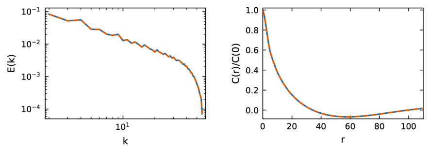
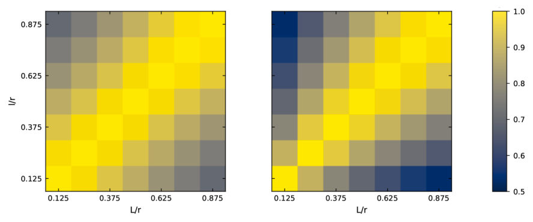
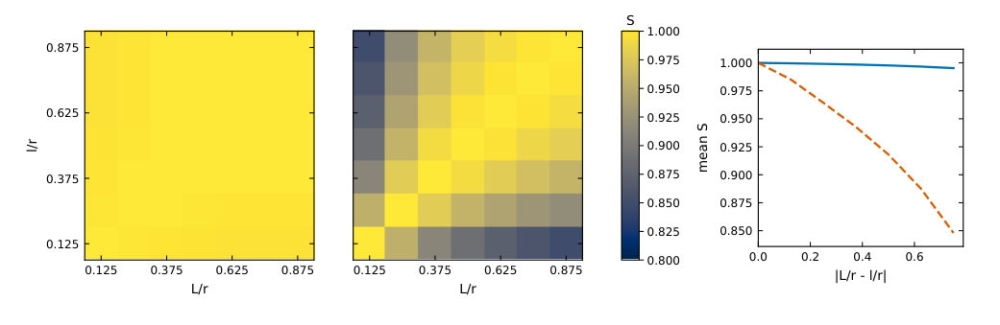
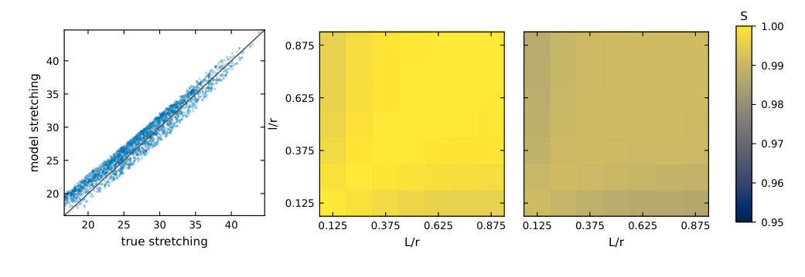
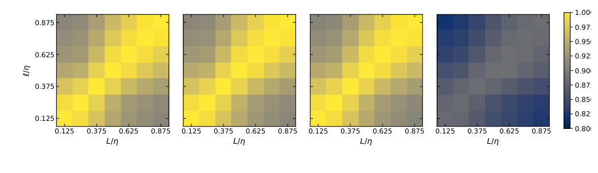
Summary. This paper introduces a new diagnostic called the coherence matrix to detect how the geometry of vector fields changes across different scales. It proves that this method can identify structural differences in flows that standard tools like power spectra or Lyapunov exponents fail to detect, specifically in the context of dynamical systems and renormalization-group flows.
Why it may be interesting. not directly relevant
Main problem. The paper addresses the lack of a diagnostic tool capable of testing whether the geometric structure of vector-field increments at finite separations remains stable across different observational resolutions, scales, or representations.
Main result. The authors demonstrate that a new 'multi-scale coherence' diagnostic can distinguish between flows that appear identical under standard second-order statistics (spectra and correlations) and can detect geometric mismatches in renormalization-group truncations.
Method. A new representation-dependent diagnostic, the coherence matrix, is introduced to compare the direction of vector-field increments after smoothing the field at two different resolutions.
Model / system. The method is tested on three distinct systems: synthetic 2D divergence-free vector fields, the Lorenz dynamical system, and the functional renormalization-group (FRG) beta-function flows for a 3D O(1) scalar theory.
Key observables. Coherence matrix (S_l_L), power spectra, scalar two-point correlations, local stretching proxies (maximum singular value of the Jacobian), and pointwise beta-vector cosine.
Important parameters / regimes. Smoothing resolutions (l, L), separation distance (r), resolution ratios (a = L/r, b = l/r), and the FRG width factor (chi).
Assumptions / limitations. The diagnostic is representation-dependent and not coordinate-invariant; it depends on the chosen variables, metric, and coarse-graining protocol.
Figures summary. Figure 1 and 2 show that synthetic fields with identical spectra have distinct coherence matrices; Figure 3 shows how coordinate wrinkling reduces Lorenz field coherence; Figure 5 and 6 demonstrate that cross-truncation coherence in FRG flows decreases as higher-order couplings are activated.
Paper structure. The paper introduces the multi-scale coherence diagnostic, then applies it to three test cases (synthetic fields, Lorenz system, and FRG flows) to demonstrate its ability to capture geometric information invisible to standard statistics, before concluding with its utility as a complementary tool.
Many problems in nonlinear and statistical physics are formulated through represented flows, including physical-space vector fields, phase-space drift fields, and truncated renormalization-group beta functions. We introduce a complementary representation-dependent diagnostic for testing whether finite-separation flow geometry is stable across observational resolution. For two separated points, states, or theories, the method compares the direction of the corresponding vector-field increment after the field has been smoothed at two resolutions. Averaging this normalized comparison over sampled separations gives a coherence matrix tied to the chosen variables, coarse graining, metric, and sampling protocol; it is a consistency test, not a coordinate-invariant quantity. We demonstrate the diagnostic in three settings. Synthetic divergence-free fields with identical Fourier amplitudes, spectra, and scalar two-point correlations nevertheless produce distinct coherence matrices, showing that second-order statistics do not determine cross-resolution increment geometry. Lorenz phase-space tests show that a smooth coordinate wrinkling changes represented drift geometry without changing the underlying dynamics, and that a weak model perturbation lowers finite-separation coherence even when local stretching proxies remain closely matched. Finally, for functional renormalization-group flows of the three-dimensional \(O(1)\) scalar theory, projected \(M=4,5,6\) LPA beta fields remain internally coherent, while cross-truncation coherence decreases as higher-order coupling directions are activated. The diagnostic provides a practical field-level check of how representations, models, and truncations preserve finite-separation flow geometry, complementing rather than replacing standard local, spectral, or fixed-point diagnostics.
Authors: N. Josef Bruzzese
Type: theory · Category: quantum information and computing · PDF: https://arxiv.org/pdf/2605.26697v1
Analysis basis: full PDF text, analyzed in chunks
Topic relevance: quantum measurements 2/5
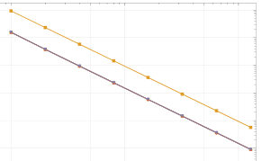
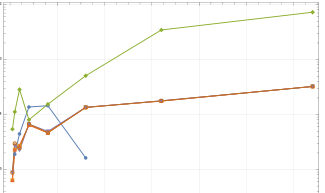
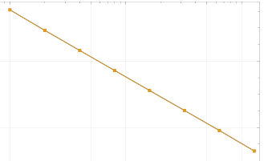
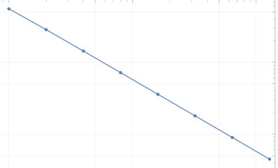
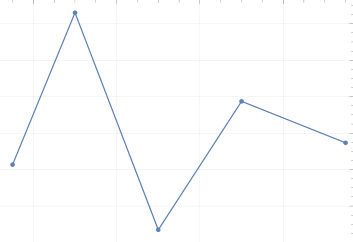
Summary. The paper develops a new way to calibrate quantum gates that suffer from non-Abelian geometric errors, specifically for photonic qudits. It replaces simple phase subtraction with a matrix-based method that is robust even when the choice of basis changes. This allows for more accurate error correction in complex, high-dimensional quantum computing architectures.
Why it may be interesting. This is highly relevant for quantum optics and photonic QI as it provides a rigorous mathematical foundation for calibrating high-dimensional, non-Abelian geometric gates in complex photonic circuits.
Main problem. Estimating and correcting non-Abelian geometric distortions (Wilczek-Zee holonomies) in quantum systems where the encoded object is a transported logical subspace rather than independent rays.
Main result. A gauge-covariant theoretical framework for reconstructing non-Abelian holonomy using polar decomposition of overlap matrices, providing robust left- and right-acting feed-forward correction rules.
Method. A discrete estimator constructed from the polar decomposition of overlap matrices between successive subspace frames, validated through numerical studies using synthetic non-Abelian transport models.
Model / system. Time-bin photonic qudits where a rank-m logical subspace is subject to transport along a path in parameter space, potentially involving mode mixing or effective degeneracies.
Key observables. Matrix-valued holonomies, spectrum of the holonomy, Wilson-loop traces, and the minimum singular value of overlap matrices as a conditioning diagnostic.
Important parameters / regimes. Rank m of the subspace, control parameters lambda, and the conditioning parameter mu_min (minimum singular value).
Assumptions / limitations. The reconstruction assumes well-conditioned overlap matrices (singular values bounded away from zero) and a smooth (C2) frame path; it does not assume a specific device-specific transfer matrix or loss model.
Figures summary. Figure 1 outlines the reconstruction algorithm; Figure 2 shows convergence of Frobenius error with refinement; Figure 3/6 includes a diagnostic for projector-step refinement.
Paper structure. The paper identifies the failure of Abelian calibration in subspace architectures, proposes a matrix-valued gauge-covariant alternative, provides mathematical proofs for optimality and stability, and validates the framework via numerical simulations of synthetic transport models.
We develop a theoretical and computational framework for estimating and correcting non-Abelian geometric distortions in time-bin photonic qudit processing when the relevant encoded object is a transported logical subspace rather than a collection of independent rays. In such settings, for example under mode mixing, multiplexed routing, or effective degeneracies, the geometric contribution is naturally matrix-valued and is described by a Wilczek-Zee holonomy on a rank-$m$ sub-bundle of the ambient Hilbert space. The framework generalises prior Abelian time-bin Pancharatnam-Berry feed-forward calibration, in which geometric distortions are represented by bin-resolved scalar phases, to the non-Abelian, matrix-valued case. We construct a gauge-covariant discrete estimator from overlap matrices between successive subspace frames: the polar factor of each overlap gives a unitary backward frame comparator, and the adjoint comparators compose to approximate the forward path-ordered exponential of the Wilczek-Zee connection. We prove gauge covariance under frame changes, polar optimality of the local comparator, consistency under partition refinement, and perturbative stability under well-conditioned overlap errors. We then formulate left- and right-acting feed-forward correction rules for removing the estimated holonomy from an effective logical operation. The work does not assume a device-specific transfer matrix, loss model, detector model, or experimental calibration pipeline; numerical studies use synthetic non-Abelian transport models to validate covariance, convergence, conditioning dependence, and correction fidelity.
Authors: Ameya Chavda, Clement Delcamp, Alex Turzillo, Minyoung You
Type: theory · Category: strongly correlated electrons · PDF: https://arxiv.org/pdf/2605.27193v1
Analysis basis: full PDF text, analyzed in chunks
Topic relevance: entanglement & information structure 2/5
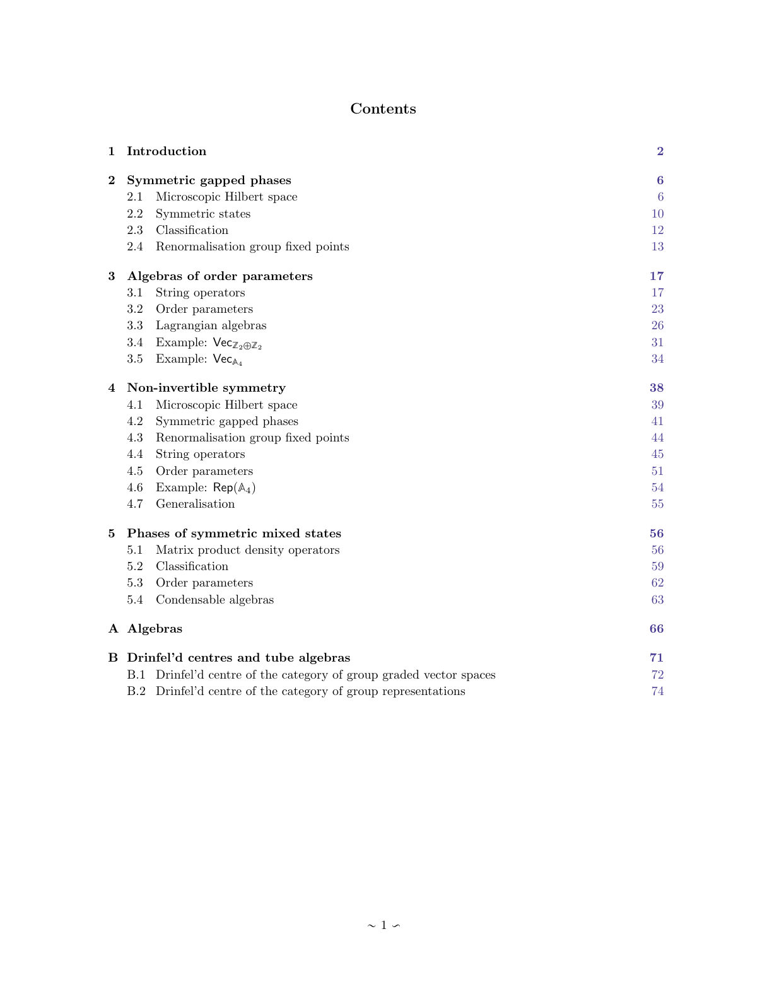
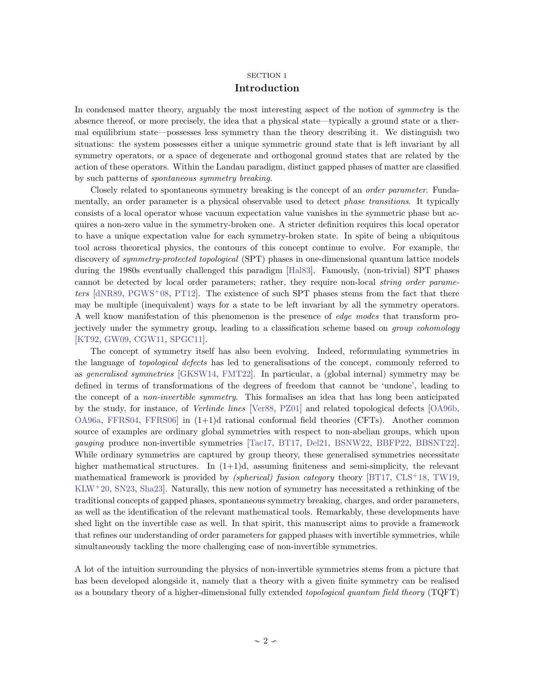
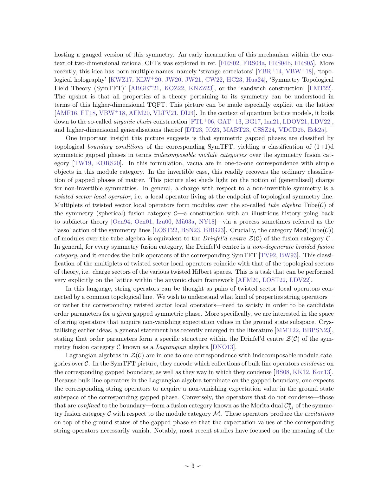
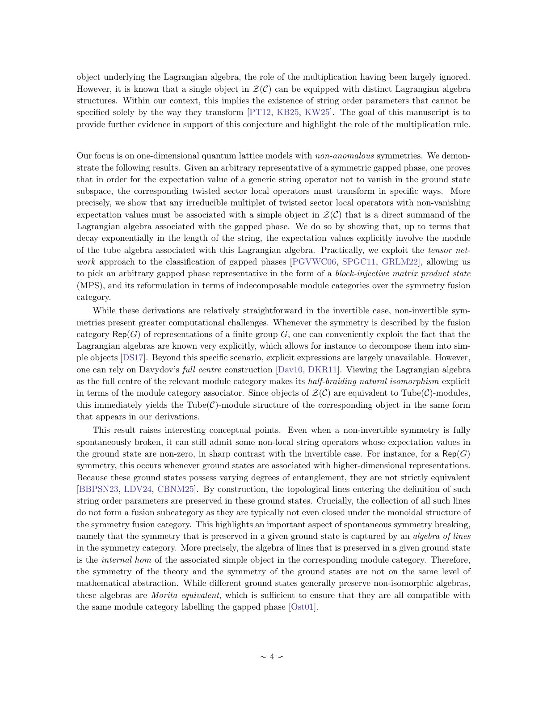
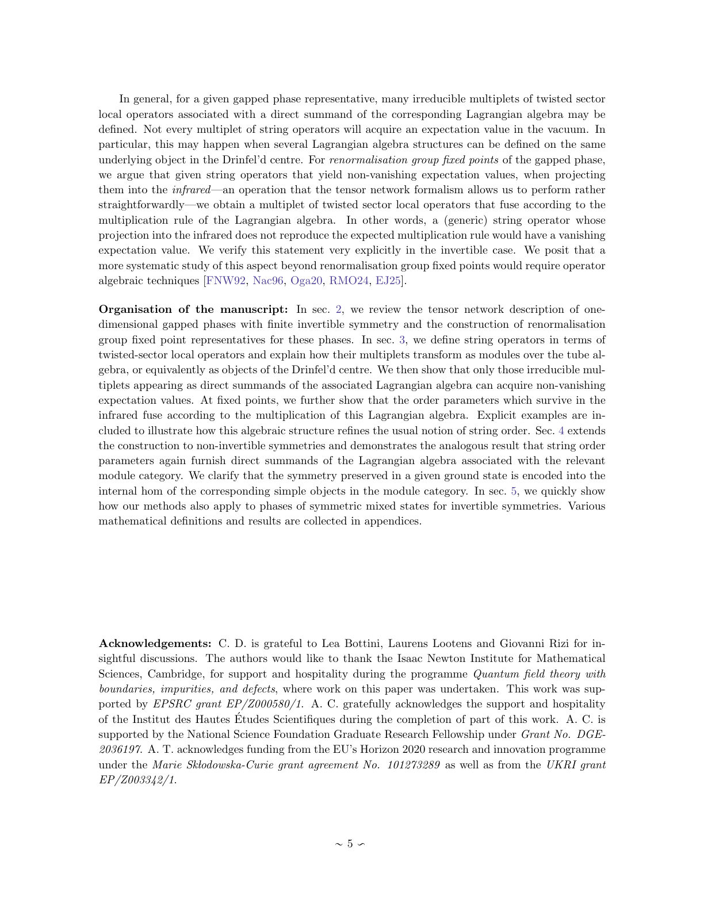
Summary. This paper provides a unified algebraic framework to classify string order parameters in 1D systems with non-invertible symmetries. It demonstrates that these order parameters form a Lagrangian algebra in the Drinfeld center of the symmetry category. The results extend the understanding of phase transitions and symmetry breaking to both pure and mixed-state quantum systems.
Why it may be interesting. This work is highly relevant for many-body dynamics and open quantum systems as it extends the classification of order parameters to symmetric mixed states and provides a rigorous algebraic framework for non-invertible symmetries.
Main problem. The paper investigates the algebraic properties of string order parameters in 1D quantum lattice models with both invertible and non-invertible symmetries, specifically focusing on the role of the multiplication rule in the Lagrangian algebra.
Main result. The authors prove that multiplets of string order parameters organize into a Lagrangian algebra within the Drinfeld center of the symmetry category and that the expectation value of a string operator depends on the associated tube algebra module.
Method. The study utilizes tensor network approaches, specifically block-injective Matrix Product States (MPS), combined with the mathematical framework of fusion category theory, module categories, and the SymTFT construction.
Model / system. One-dimensional quantum lattice models (spin systems) characterized by finite invertible or non-invertible (fusion) symmetries, including both gapped phases and symmetric mixed states.
Key observables. String order parameters, twisted sector local operators, and expectation values of non-local operators.
Important parameters / regimes. Gapped phases, spontaneous symmetry breaking (SSB) regimes, infrared (IR) limit, and non-anomalous symmetry categories.
Assumptions / limitations. The symmetries are assumed to be finite and semi-simple (fusion categories), and the gapped phases are represented by block-injective MPS.
Paper structure. The paper moves from the classical Landau paradigm to SPT phases and non-invertible symmetries, establishing a unified algebraic description through tensor networks, classifying gapped phases via module categories, and providing explicit character and Omega-symbol derivations for the Drinfeld center.
We study order parameters in one-dimensional quantum lattice models with finite invertible or non-invertible symmetry. We investigate what properties a string operator must satisfy in order to acquire a non-vanishing expectation value in a given gapped phase. We deduce that multiplets of string order parameters organise into a Lagrangian algebra in the Drinfel'd centre of the symmetry category. In particular, we highlight the role of the multiplication rule as governing the fusion of the twisted sector local operators that constitute the string operator in the infrared limit. Our derivations exploit the tensor network approach to the classification of gapped phases and its reformulation in terms of module categories over the symmetry category. Within this framework, a gapped phase is associated with a pattern of spontaneous symmetry breaking wherein a Morita class of algebras of topological lines is preserved in the ground state subspace. The crux of the proof is to show that the expectation value of any string operator explicitly depends on the tube algebra module associated with the Lagrangian algebra, which is realised as the full centre of the corresponding module category. Finally, we demonstrate that these techniques extend to phases of symmetric mixed states.
Authors: Zongbo, Bao, Jop Briët, Davi Castro-Silva, Philippe van Dordrecht, Jonas Helsen
Type: theory · Category: quantum information and computing · PDF: https://arxiv.org/pdf/2605.26983v1
Analysis basis: full PDF text, analyzed in chunks
Topic relevance: entanglement & information structure 2/5
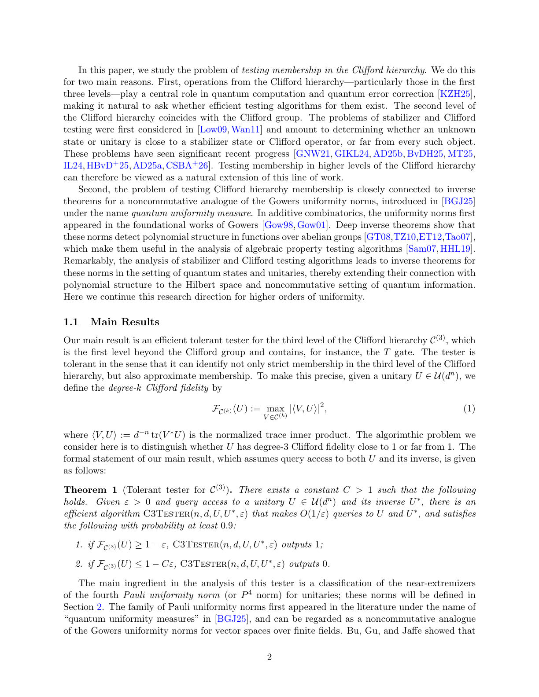
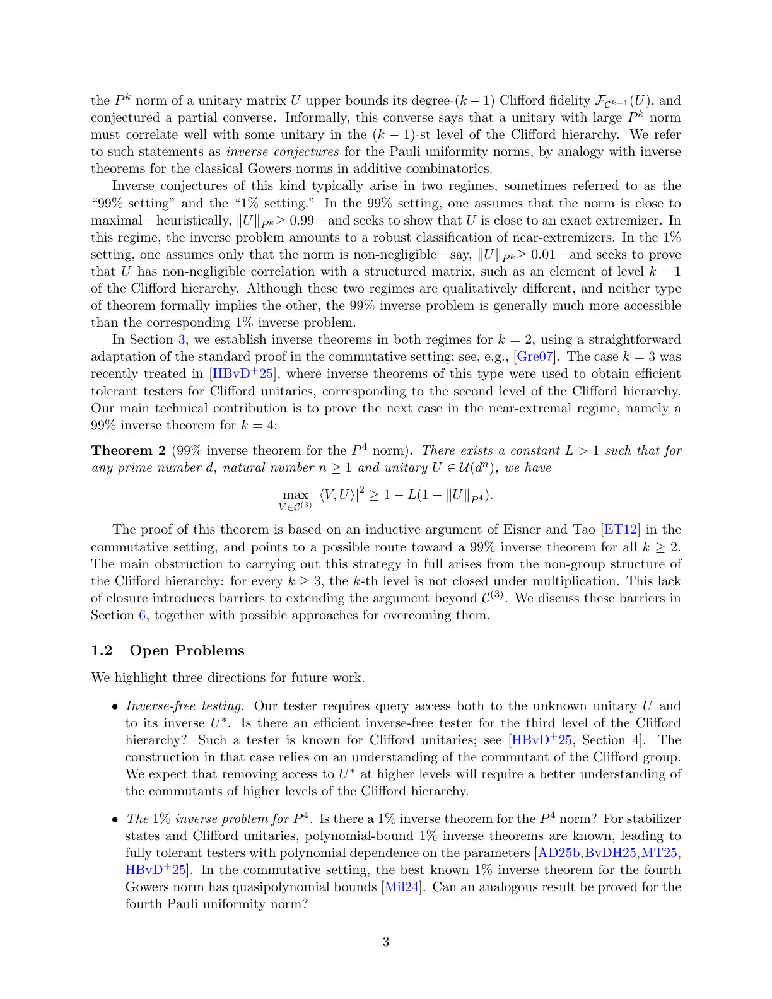
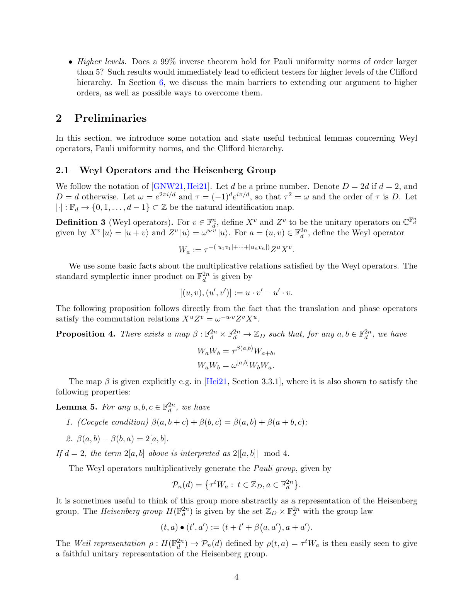
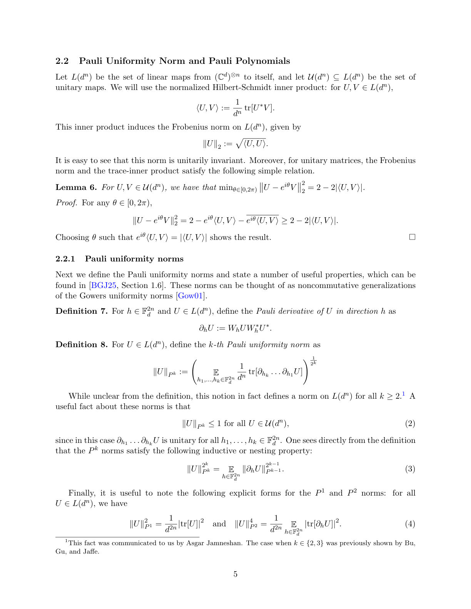
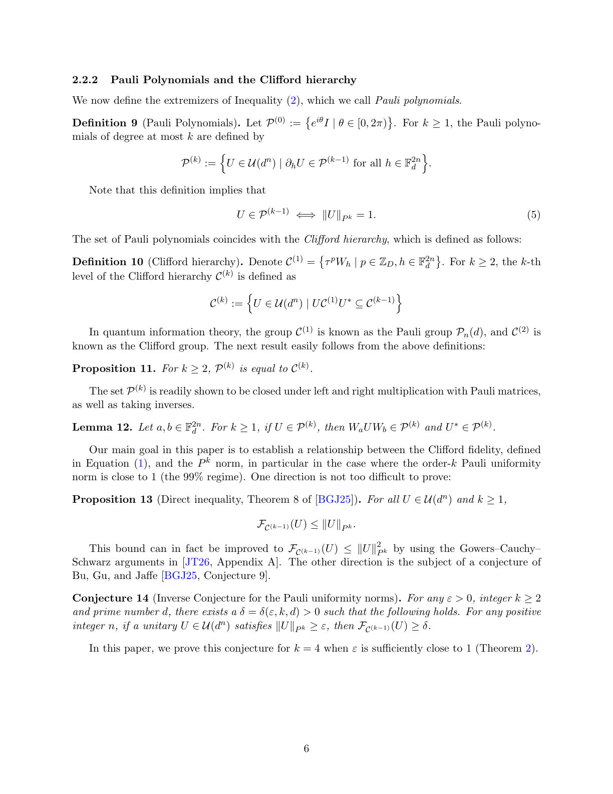
Summary. This paper provides a way to efficiently test if a quantum gate belongs to the third level of the Clifford hierarchy. It achieves this by proving that if a specific mathematical norm is large, the gate must be close to the desired hierarchy level, bridging quantum information with additive combinatorics.
Why it may be interesting. not directly relevant
Main problem. The paper addresses the problem of testing whether an unknown unitary belongs to a specific level of the Clifford hierarchy and seeks to establish inverse theorems for noncommutative Pauli uniformity norms.
Main result. The authors establish a 99% inverse theorem for the fourth Pauli uniformity norm and provide an efficient algorithm (C3Tester) to distinguish unitaries close to the third level of the Clifford hierarchy.
Method. The study uses higher-order Fourier analysis, inductive arguments adapted from additive combinatorics, and the construction of unitary representations of the Pauli group via Pauli derivatives.
Model / system. The mathematical framework involves unitary operators acting on a finite-dimensional Hilbert space (n-qudits) and the algebraic structure of the Pauli group and Clifford hierarchy.
Key observables. Degree-k Clifford fidelity and the k-th Pauli uniformity norm (Pk).
Important parameters / regimes. The 99% regime (near-extremizers), the 1% regime, and the hierarchy level k.
Assumptions / limitations. The analysis focuses on the 99% setting where the norm is close to its maximum; the extension to higher levels (k >= 5) is limited by the lack of multiplicative closure in the hierarchy.
Paper structure. The paper introduces the testing problem, defines the Pauli uniformity norms, presents the construction of the C3Tester algorithm, proves the 99% inverse theorem for k up to 4 using induction, and discusses the barriers to higher-order extensions.
We consider the problem of testing whether an unknown unitary is close to a specified level of the Clifford hierarchy. Bu, Gu, and Jaffe proposed a candidate tester for this task based on a connection with noncommutative analogues of the Gowers uniformity norms. The complexity of this tester -- whose analysis depends on a robust characterization of the near-extremizers of these norms -- was left open. We establish such a characterization for the fourth noncommutative uniformity norm and, as a consequence, obtain an efficient tester for the third level of the Clifford hierarchy. We further discuss possible routes toward resolving the problem of testing for all higher levels, highlighting the main barriers that remain.
Authors: P. Poopathysankar, Lucas Hackl, Anwesha Chakraborty
Type: theory · Category: other · PDF: https://arxiv.org/pdf/2605.26490v1
Analysis basis: full PDF text, analyzed in chunks
Topic relevance: entanglement & information structure 2/5
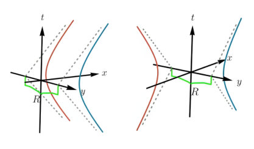
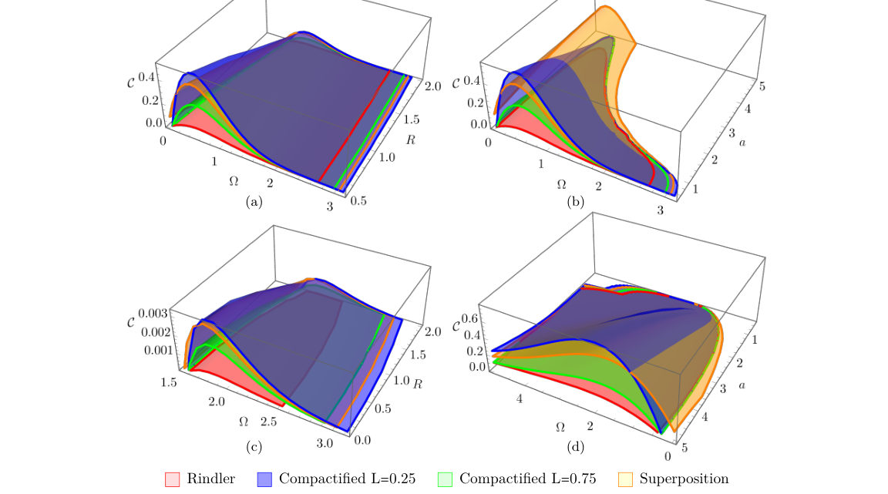
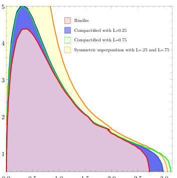
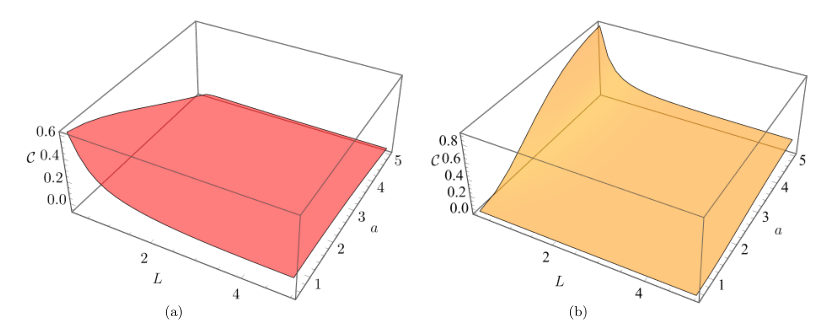
Summary. This paper explores how the geometric properties of spacetime, such as periodic dimensions and quantum superpositions of geometries, influence the ability of accelerated probes to harvest entanglement from a vacuum field. It demonstrates that topological features can protect entanglement against the noise induced by the Unruh effect. The findings suggest that entanglement harvesting could serve as an operational tool to detect quantum features of spacetime.
Why it may be interesting. not directly relevant
Main problem. The study investigates how the interplay of relativistic acceleration, spacetime topology (compactification), and quantum superposition of geometries affects the extraction of entanglement from a quantum field.
Main result. Compactification and spacetime superposition both expand the parameter space for entanglement harvesting, particularly in high-acceleration regimes, while anti-parallel acceleration yields higher entanglement than parallel acceleration.
Method. The authors use the Unruh-DeWitt entanglement harvesting protocol within a perturbative framework, calculating Wightman functions in quotient Rindler spacetimes and their superpositions.
Model / system. Two-level Unruh-DeWitt detectors following Rindler trajectories (parallel and anti-parallel) interacting with a massless scalar field in both compactified and superposed Minkowski/Rindler geometries.
Key observables. Concurrence, Negativity, local excitation probability (noise), and cross-correlation terms.
Important parameters / regimes. Acceleration (a), detector separation (R), compactification length (L), detector energy gap (Omega), and switching function width (sigma).
Assumptions / limitations. Weak coupling limit, Gaussian switching function, massless scalar field, and untwisted field boundary conditions.
Figures summary. Figure 1 shows detector trajectories; Figure 2 plots concurrence across different spacetime configurations; Figure 3 presents a phase diagram of the entanglement harvesting region; Figure 4 shows concurrence as a function of compactification length and acceleration.
Paper structure. The paper introduces the problem of entanglement harvesting in complex geometries, defines the mathematical model of detectors and spacetime, presents numerical results for various acceleration and topology configurations, and concludes with the physical implications for probing spacetime features.
We study entanglement harvested by Unruh DeWitt detectors following Rindler trajectories in compactified and superposed Minkowski spacetime. We consider different directions of acceleration (both parallel and antiparallel), separation between detectors and direction of spatial compactification mutually perpendicular to each other. Using the standard entanglement harvesting protocol, we analyze how these features influence the extracted correlations. When detector separation is perpendicular to the direction of acceleration, the harvested entanglement is uniformly suppressed due to increased spacelike separation. Compactification enhances field correlations leading to an increased concurrence and an extended harvesting range at higher accelerations. Additionally, we show that spacetime superposition introduces interference effects that further enlarge the entanglement harvesting region in parameter space, particularly in the high acceleration regime. We also find that the effect of antiparallel acceleration yielding significantly higher entanglement than parallel acceleration prevails in compactified and superposed spacetime.
Authors: Tadeusz Kosztołowicz, Aldona Dutkiewicz, Katarzyna D. Lewandowska
Type: theory · Category: statistical mechanics · PDF: https://arxiv.org/pdf/2605.27145v1
Analysis basis: full PDF text, analyzed in chunks
Topic relevance: non-equilibrium dynamics 2/5
Summary. This paper proposes a modified subdiffusion equation that incorporates a Cattaneo-type delay to prevent the non-physical infinite propagation velocity found in standard fractional diffusion models. It shows that while the effect significantly alters short-time dynamics, the system remains subdiffusive in the long-time limit. The work also emphasizes the necessity of including this delay effect in boundary conditions for physical consistency.
Why it may be interesting. not directly relevant
Main problem. Addressing the non-physical infinite propagation velocity in ordinary subdiffusion equations by introducing a Cattaneo-type effect that incorporates a random time delay in flux activation.
Main result. The authors derive a Cattaneo-type subdiffusion equation (CTSE) that ensures a finite propagation velocity and demonstrate that the Cattaneo effect modifies short-time dynamics without inducing true superdiffusion.
Method. The study uses Laplace transforms, Riemann-Liouville and Caputo fractional derivatives, and series expansions to solve the fractional differential equations and analyze asymptotic limits.
Model / system. A one-dimensional homogeneous system describing subdiffusive processes (such as transport in viscoelastic media or porous media) where the flux is regulated by a Mittag-Leffler-controlled delay distribution.
Key observables. Green's function (probability density), Mean Square Displacement (MSD), and the probability density of particle absorption at a partially absorbing wall.
Important parameters / regimes. Subdiffusion exponent (alpha), Cattaneo effect parameter (kappa), delay strength (tau), diffusion coefficient (D), and wall absorption parameter (beta).
Assumptions / limitations. The diffusion parameters are assumed to be time-independent and independent of concentration; the Cattaneo effect is assumed to be present in both the governing equation and the boundary conditions for physical consistency.
Figures summary. Figures compare Green's functions and MSD evolution with and without the Cattaneo effect across short and long time limits, and illustrate the impact of including the effect in boundary conditions.
Paper structure. The paper introduces the problem of infinite velocity, derives the CTSE using Laplace transforms, analyzes the short-time and long-time asymptotic behaviors of the Green's function and MSD, investigates boundary conditions at a partially absorbing wall, and proposes an experimental identification method.
The ordinary subdiffusion equation, with a fractional time derivative of at most first order, describes a process in which the propagation velocity of diffusing molecules is unlimited. To avoid this non-physical property different forms of the Cattaneo subdiffusion equation have been proposed. We define the Cattaneo effect as a delay of the ordinary subdiffusion flux activation by a random time. By incorporating this effect into the flux equation we get a Cattaneo--type subdiffusion equation (CTSE). We consider a subdiffusion process in which the Cattaneo effect is generated by the time-delay probability distribution controlled by the Mittag-Leffler function. Then, CTSE differs from the ordinary subdiffusion equation by a term with a fractional time derivative, whose order can be independent of the subdiffusion exponent. The influence of the Cattaneo effect on the solutions to the CTSE is discussed. We show that the process described by CTSE is subdiffusion in the entire time domain even though the temporal evolution of the mean square displacement of diffusing particle in the short-time limit is typical for superdiffusion. The delay in the flux activation in the subdiffusion equation should also cause a flux delay in a boundary condition. As an example, we study subdiffusion with the Cattaneo effect in a system with a partially absorbing wall at which the Robin boundary condition is assumed. We also propose a method for experimentally identifying the Cattaneo effect in a subdiffusive system.
Papers from primary archives without highlighted authors or any topic match. Click to expand.
Authors: Mohamed M. Anber
Type: theory · Category: other · PDF: https://arxiv.org/pdf/2605.26224v1
Analysis basis: full PDF text, analyzed in chunks
Summary. This paper resolves the apparent breakdown of S-duality on non-compact ALE spaces by treating the path integral as a vector-valued boundary state. It demonstrates that these 'chiral building blocks' can be glued together to recover standard modularly covariant partition functions on closed manifolds. The work also explores the role of 1-form symmetries and the associated mixed electric-magnetic anomalies.
Why it may be interesting. not directly relevant
Main problem. Investigating the apparent failure of S-duality (modularity) for the Maxwell path integral on non-compact A-type ALE spaces and determining how higher-form symmetries and boundary states resolve this.
Main result. The path integral on ALE spaces is reinterpreted as a vector-valued boundary state whose components (theta-function blocks) transform via vector-valued modular covariance, successfully recovering the standard partition function on closed manifolds like S2 x S2 upon gluing.
Method. The author uses the Gibbons-Hawking ansatz for field construction, evaluates the Maxwell path integral, and employs a gluing construction (pairing boundary states) to validate the results on closed manifolds.
Model / system. Abelian Maxwell theory on A-type Asymptely Locally Euclidean (ALE) spaces, which are hyperkähler manifolds approaching R4/Z_N at infinity, with an asymptotic boundary of a lens space S3/Z_N.
Key observables. Complexified coupling (tau), theta-function blocks (Theta_mu), partition functions, 1-form symmetry backgrounds, and Wilson/t'Hooft line operators.
Important parameters / regimes. Complexified coupling tau = theta/2pi + 4pi*i/g^2, N-ality (mu), and the order of discrete Z_k subgroups.
Assumptions / limitations. The study focuses specifically on A-type ALE spaces and assumes the existence of well-defined boundary conditions (e.g., Dirichlet) for the gauge fields.
Figures summary. A schematic illustration of an A3-type ALE space showing a chain of three 2-spheres.
Paper structure. The paper begins by identifying the modularity failure on ALE spaces, introduces the boundary state formalism and vector-valued modular covariance, validates the construction via gluing Eguchi-Hanson spaces to form S2 x S2, and then extends the analysis to include 1-form symmetry backgrounds and discrete gauging.
We study Abelian $S$-duality of Maxwell theory on $A$-type asymptotically locally Euclidean (ALE) spaces. Unlike on closed four-manifolds, the Maxwell path integral on an ALE space is not naturally a scalar partition function. Rather, it decomposes into theta-function blocks labeled by flat $U(1)$ holonomy sectors on the asymptotic lens-space boundary. We interpret these blocks as components of the Hilbert-space boundary state prepared by the ALE path integral. With this interpretation, the apparent failure of ordinary modularity is replaced by vector-valued modular covariance under the action of the modular group. We test this picture explicitly for Eguchi-Hanson space by gluing it to its orientation reversal. The resulting closed four-manifold is diffeomorphic to $S^2\times S^2$, and the natural pairing of the two ALE boundary states reproduces the standard Maxwell partition function on $S^2\times S^2$. We then refine the construction by turning on electric and magnetic $1$-form symmetry backgrounds. In their presence, the ALE theta blocks are not ordinary functions, but sections of a line bundle over the Cartan torus associated with the $A_{N-1}$ root lattice, reflecting the mixed electric-magnetic $1$-form anomaly. We also discuss gauging discrete $\mathbb Z_k$ subgroups of the $1$-form symmetries and show that the vector-valued boundary-state structure remains the natural covariant framework after gauging. In this sense, ALE spaces behave as chiral building blocks for four-dimensional Maxwell theory: individual ALE blocks carry sector-resolved boundary data, while gluing pairs these sectors to produce an ordinary closed-manifold partition function, much like the pairing of left- and right-moving conformal blocks in two-dimensional CFT.
Authors: Jianshuo Gao, Xiao Yuan, Yuan Yao
Type: theory · Category: quantum information and computing · PDF: https://arxiv.org/pdf/2605.26522v1
Analysis basis: full PDF text, analyzed in chunks
Summary. This paper provides a systematic comparison of the three primary methods for preparing logical T-states in fault-tolerant quantum computing. It reveals that while code-switching and cultivation are more efficient for low-overhead tasks, only magic state distillation can currently meet the extreme fidelity requirements needed for large-scale algorithms like Shor's algorithm.
Why it may be interesting. not directly relevant
Main problem. The lack of a unified framework to compare the resource overheads of different logical T-state preparation protocols due to heterogeneous reporting conventions in existing literature.
Main result. The study identifies a trade-off landscape where distillation is the only viable route for ultra-high-fidelity requirements (e.g., RSA-2048), while code-switching and cultivation offer much lower overhead for lower-fidelity or intermediate-fidelity regimes.
Method. A meta-analysis and comparative study of existing quantitative results, using a structured framework that retains source-native cost units and a logarithmic normalization for family-level visualization.
Model / system. Fault-tolerant quantum computing architectures based on stabilizer codes, including surface codes, color codes, and qRM codes, specifically focusing on the implementation of non-Clifford T-gates.
Key observables. Output error (epsilon_out), single-attempt cost (V), expected cost per accepted output (V_exp), peak qubit footprint (Q_peak), and latency (D).
Important parameters / regimes. Error regimes ranging from 1e-6 to 1e-20, RSA-2048 error budgets, and T-state consumption rates (c_T = 4 or 7).
Assumptions / limitations. The comparison is bounded by the noise models, decoders, and reporting completeness of the underlying source papers; it does not include concatenated coding.
Figures summary. Figure 1 shows a T-gate injection gadget; Figure 2 schematically summarizes distillation, cultivation, and code-switching; Figure 3 is a regime map of expected cost vs. output error; Figure 4 is a radar plot of normalized protocol metrics.
Paper structure. The paper introduces the problem of heterogeneous comparison, defines a multi-metric framework, presents a comparative analysis of three protocol families (distillation, cultivation, code-switching), provides an algorithm-level case study using Shor's algorithm, and concludes with a summary of the trade-off landscape.
Logical T state preparation is a major overhead source in fault tolerant architectures built from stabilizer operations. Existing protocols, however, are reported under different code families, noise models, postselection rules, and cost conventions, making direct comparison difficult. We compare three representative preparation routes: magic state distillation, magic state cultivation, and code switching, using currently available results. Rather than reducing heterogeneous data to a single cost metric, we retain source native cost units and record output error, single attempt cost, expected cost per accepted output, footprint, latency, and reporting completeness for each configuration. Within the current dataset, distillation reaches the lowest output error regime; code switching achieves the lowest reported single attempt cost and the smallest explicit footprint among the compatible rows; and recent RP2 cultivation results add low cost cultivation points with output errors between 1e-6 and 1e-9. As a simple algorithm level case study, we also examine the reported preparation routes under an error budget motivated by Shor factoring algorithm, in order to relate single state preparation costs to full workload requirements. The resulting comparison clarifies the trade offs currently supported across the literature, while remaining bounded by the conventions and coverage of the underlying papers.
Authors: Euimin Lee, Shiho Kim
Type: theory · Category: quantum information and computing · PDF: https://arxiv.org/pdf/2605.26544v1
Analysis basis: full PDF text, analyzed in chunks
Summary. This paper proposes using reinforcement learning to adaptively allocate measurement shots during the recursive steps of the RQAOA algorithm. By learning to assign more resources to difficult elimination steps, the method significantly reduces the total quantum computational cost without sacrificing the quality of the optimization solution.
Why it may be interesting. not directly relevant
Main problem. The computational bottleneck and noise sensitivity caused by inefficient, uniform measurement shot allocation in the recursive stages of the RQAOA algorithm.
Main result. A reinforcement learning-based residual policy achieves a 36% reduction in total shots compared to uniform allocation while maintaining high solution reliability and generalizing to unseen problem sizes.
Method. A two-pronged approach using a hand-crafted heuristic baseline and a tabular Double Q-learning agent that learns a residual correction to the baseline under a Lagrangian-constrained objective.
Model / system. The study focuses on the weighted Max-Cut problem on d-regular graphs, modeled via an Ising Hamiltonian, using a depth-1 Recursive QAOA (RQAOA) framework.
Key observables. Pairwise correlations (expectation values of Pauli-Z operators), success rate (approximation ratio >= 0.99), and effective shots per success (ESP).
Important parameters / regimes. Circuit depth p=1, target success rate p*=0.95, and the 4D state descriptor including variable count, z-gap, conflict ratio, and graph distance.
Assumptions / limitations. The study is restricted to the noiseless regime and a fixed circuit depth (p=1) to isolate recursion-level effects from hardware noise or deeper circuit complexities.
Figures summary. Figure 1 illustrates the RQAOA pipeline and the RL loop; Figure 3 shows normalized shot usage vs. success rate; Figure 4 shows mean ESP ratio by problem size; Figure 5 shows training diagnostics for the Lagrangian multiplier; Figure 6 compares allocation patterns between different controllers.
Paper structure. The paper introduces the RQAOA bottleneck, proposes a reinforcement learning framework for adaptive shot allocation, details the MDP formulation and Double Q-learning implementation, presents performance evaluations across various graph sizes and complexity levels, and discusses the robustness and limitations of the learned policy.
Recursive QAOA (RQAOA) solves combinatorial optimization problems by using shallow quantum circuits to estimate pairwise correlations and recursively eliminate variables until a classical solver can handle the residual instance. Each elimination step requires measurement shots, and the total shot cost grows with the number of recursive stages. On near-term quantum devices, increasing shot counts can translate directly into greater exposure to hardware-level noise sources such as readout errors and decoherence, making shot-efficient execution not merely a cost-reduction measure but a factor with direct implications for solution reliability. While shot reduction has been studied broadly across NISQ algorithms, step-wise measurement control inside the recursive loop of RQAOA has received little attention. We formulate this step-wise allocation as a sequential decision problem and propose two strategies for depth-1 RQAOA on weighted Max-Cut instances. A hand-crafted heuristic assigns shots based on local indicators of step difficulty, and a tabular Double Q-learning agent learns a residual policy that adjusts this baseline under a Lagrangian-constrained objective. Both methods are evaluated under a fixed-cap fairness protocol that equalizes the per-step budget across all strategies, and the elimination rule itself is kept unchanged so that the contribution of adaptive measurement control can be isolated. On a diverse set of weighted graph instances spanning a range of sizes and structures, the heuristic reduces total shots by approximately 23% relative to uniform allocation, and the RL policy achieves a 36% reduction with a lower effective shots per success ratio than both baselines. The improvement persists on problem sizes not seen during training, suggesting that reinforcement learning can discover efficient, instance-adaptive measurement strategies in recursive quantum optimization.
← Index · ← Previous · Next →